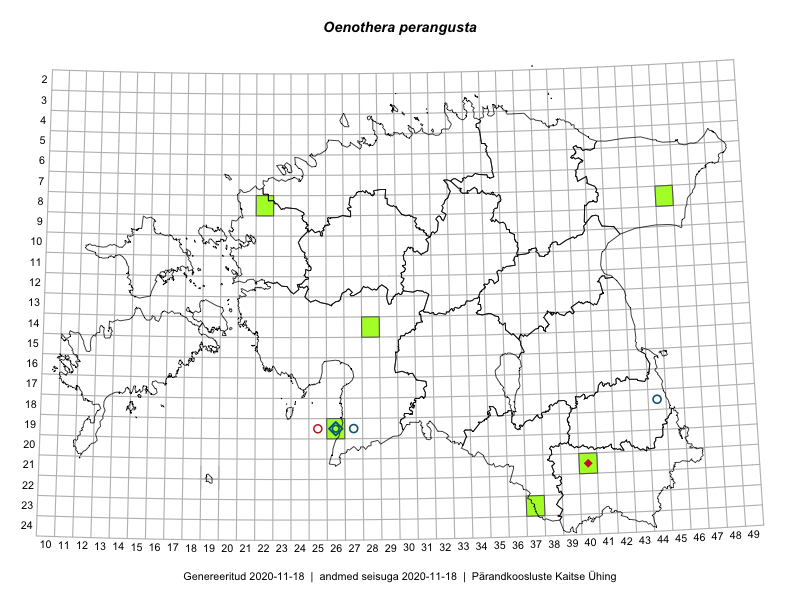

Oenothera perangusta — kitsalehine kuningakepp
Onagraceae :: Oenothera perangusta Gates (23)

Kaart põhineb 23 kirjel:
herbaareksemplare 23
Taime kaasaegsed ja ajaloolised leiukohad asuvad 8 ruudus.
Tingmärgid ja leidudega ruutude arvud periooditi uues (u) ja 2005 andmestikus (v)
| █ | vahemik | u1 | v2 |
|---|---|---|---|
| █ | 2006–2020 | 6 | – |
| ◆/◇ | 1971–2005 | 1 | 1 |
| ○ | 1921–1970 | 3 | 3 |
| + | kuni 1920 | 0 | 0 |
| × | hävinud | – | 0 |
| ? | kaheldav | – | 0 |
| Ruut | Leidja(d) | Leiuaeg | Kirje |
|---|---|---|---|
| 21-40 | Toomas Kukk, Indrek Tammekänd | 2019-07-10 | TAA0148837: Oenothera perangusta Gates |
| 21-40 | Toomas Kukk, Indrek Tammekänd | 2019-07-10 | TAA0148838: Oenothera perangusta Gates |
| 21-40 | Toomas Kukk, Indrek Tammekänd | 2019-07-10 | TAA0148873: Oenothera perangusta Gates |
| 21-40 | Toomas Kukk, Indrek Tammekänd | 2019-07-10 | TAA0148874: Oenothera perangusta Gates |
| 19-26 | Indrek Tammekänd | 2017-10-02 | TAA0143641: Oenothera perangusta Gates |
| 14-28 | Indrek Tammekänd, Ott Luuk | 2017-08-11 | TAA0143638: Oenothera perangusta Gates |
| 08-22 | Toomas Kukk, Ilmar Uibopuu | 2017-07-29 | TAA0141729: Oenothera perangusta Gates |
| 08-22 | Toomas Kukk, Ilmar Uibopuu | 2017-07-29 | TAA0141730: Oenothera perangusta Gates |
| 14-28 | Thea Kull, Tiit Hallikma | 2016-07-08 | TAA0139405: Oenothera perangusta Gates |
| 19-26 | Indrek Tammekänd | 2016-06-29 | TAA0139834: Oenothera perangusta Gates |
| 08-45 | Peedu Saar, Liina Oja | 2015-07-22 | TAA0135201: Oenothera perangusta Gates |
| 23-37 | J.-M. Habicht | 2008-07-30 | TAM0014611: Oenothera perangusta Gates |
| 19-26 | J.-M. Habicht | 1999-07-06 | TAM0024492: Oenothera perangusta Gates |
| 19-26 | J.-M. Habicht | 1999-07-06 | TAM0024493: Oenothera perangusta Gates |
| 19-26 | Toomas Kukk | 1998-06-27 | TAA0088019: Oenothera perangusta Gates |
| 19-26 | Toomas Kukk | 1998-06-27 | TAA0088020: Oenothera perangusta Gates |
| 19-26 | Linda Viljasoo | 1968-08-06 | TAA0088005: Oenothera perangusta Gates |
| 19-27 | Ellen Vilbaste | 1965-07-13 | TAA0115394: Oenothera perangusta Gates |
| 19-26 | S. Talts | 1958-07-22 | TAA0088007: Oenothera perangusta Gates |
| 19-26 | S. Talts | 1958-07-22 | TAA0088010: Oenothera perangusta Gates |
| 19-27 | V. Kuusk, A. Ojaveer | 1958-07-17 | TAA0088009: Oenothera perangusta Gates |
| 19-26 | E. Lellep | 1958-07-17 | TAA0088008: Oenothera perangusta Gates |
| 18-44 | L. Viljasoo | 1954-07-20 | TAA0088006: Oenothera perangusta Gates |
Ruutude arv uue atlase andmekogu järgi. Muuhulgas arvestab vanemat herbaariumi, 2005. aasta atlase välitöölehtedelt uuesti digitaliseeritud andmeid jne. Uue atlase andmekogust pärinevad andmed on kaardile kantud siniste sümbolitega.↩︎
Ruutude arv 2005. aasta atlase (Kukk, T., Kull, T., Eesti taimede levikuatlas. Eesti Maaülikool, Põllumajandus- ja Keskkonnainstituut, Tartu, 2005) järgi. Andmeallikana on kasutatud levik.exe programmi, kus igas ruudus on registreeritud vaid uusim leid. Seetõttu on vanemate perioodide kohta andmed puudulikud. Kasutatud levik.exe andmestikus leidub mõningaid kõrvalekaldeid atlase trükis ilmunud versioonist, sagedamini tarnade ja käpaliste seas. Lisaks leidub selles andmestikus valik liike (peamiselt väheste leidudega tulnuktaimed), mille kaarte trükis ei avaldatud. Vana atlase andmed ruutudest, milles ei ole uue atlase andmekogus leide enne 2006. aastat, on kaardil esitatud punaste sümbolitega. Vana atlase andmetel hävinud ja kaheldavaid leiukohti pole hilisemate (taas)leidude põhjal korrigeeritud.↩︎